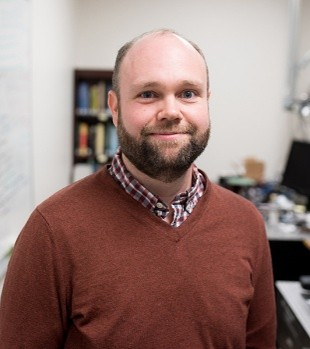
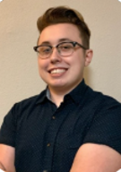

Interdisciplinary experience spanning mechancial&material science, mechatronic prototyping, and algorithm programming. Focused on translating adaptive physical intelligence research into deployable real-world hardware systems.
Professor and MBA advisor with decades of experience in go-to-market strategy, commercialization of advanced technologies, startup formation, and venture advising.

Professor, inventor, and MEMS expert with extensive experience in microsystems research, manufacturing, patents, and technical commercialization.

NDSEG Fellow and PhD student with an industry background in semiconductor fabrication, failure analysis, and device testing. Focused on process development in MEMS fabrication for autonomous materials.
Deep expertise in GTM strategy, product commercialization, and customer-centric innovation from UT Austin's Master of Science in Technology Commercialization (MSTC) program. His training emphasizes structured market validation, beachhead segmentation , and end-to-end commercialization, translating raw technologies into scalable business.